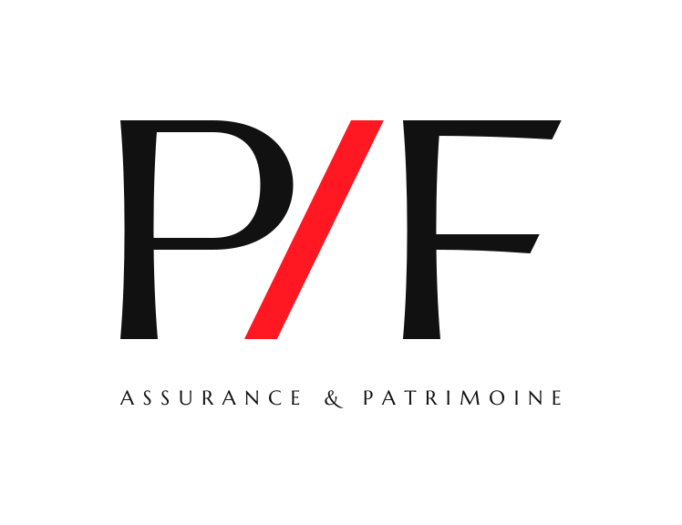
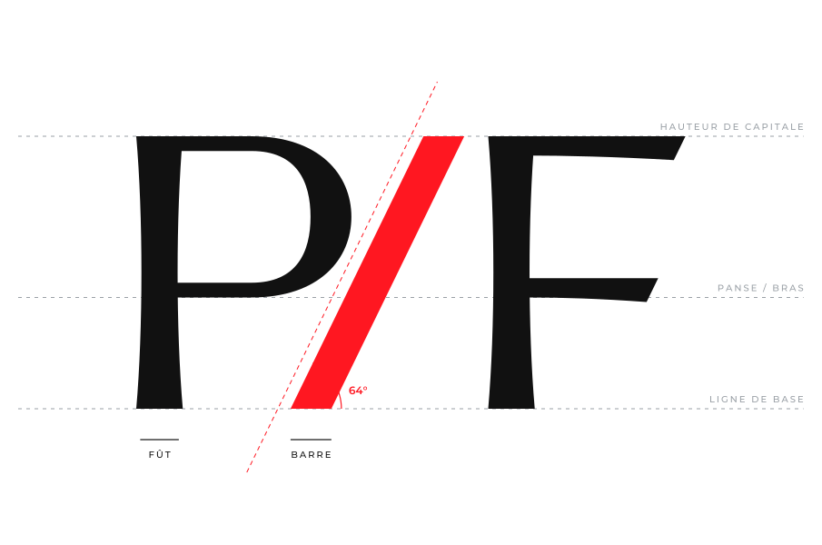
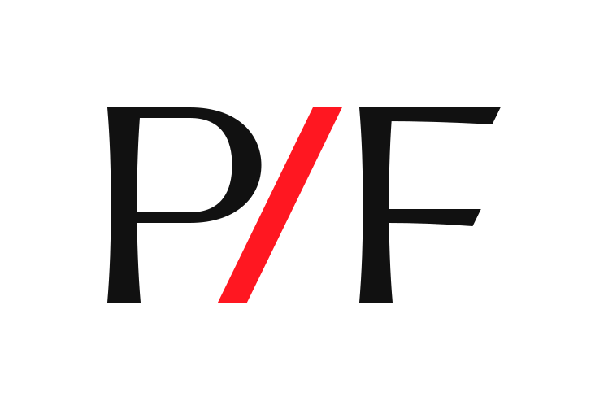
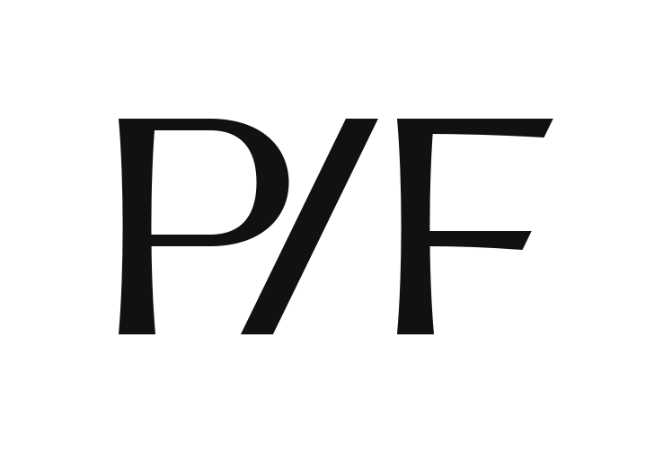
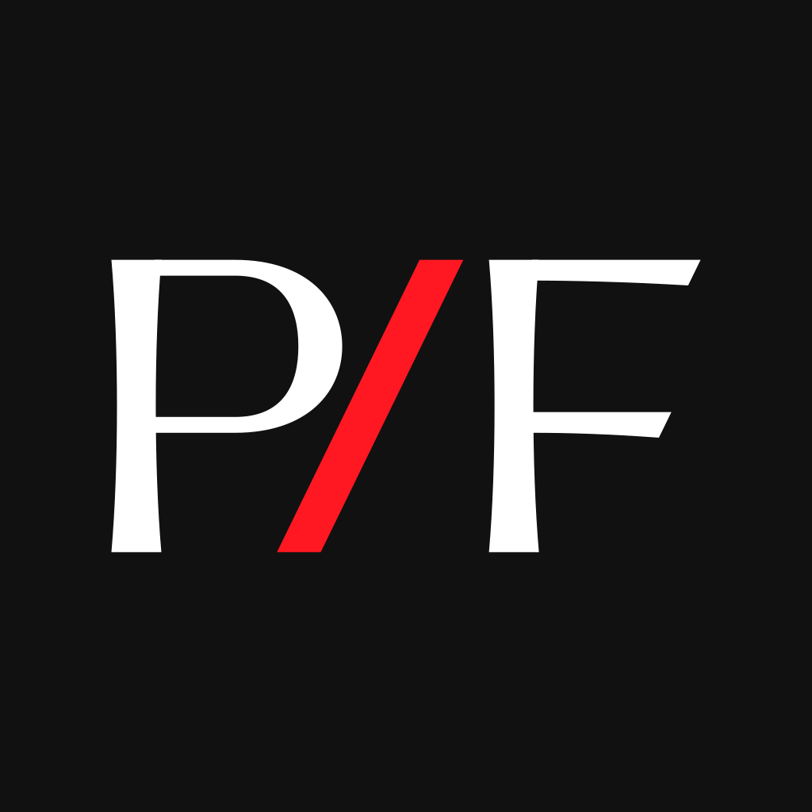
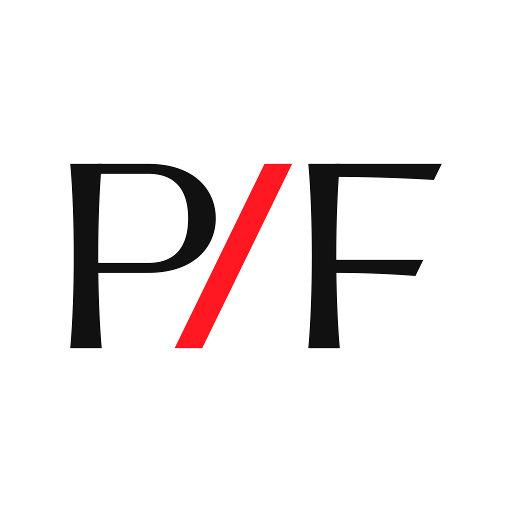

Le P et le F sont dessinés à la main, dans l'esprit des capitales gravées dans la pierre : des fûts légèrement cintrés qui s'évasent aux extrémités. C'est la promesse du métier, l'assurance, l'épargne et la retraite : ce qui est construit pour durer et se transmettre. La barre AXA, droite et pleine, se tient entre les deux lettres, à leur hauteur exacte ; son angle se retrouve dans la coupe des bras du F.







Icône pour l'application, les réseaux sociaux et le favicon du site : le monogramme seul, centré, sur un carré noir ou blanc.
Monogramme : P et F dessinés sur mesure (fichiers vectoriels). Signature et titres : Marcellus, capitales glyptiques de la même famille d'esprit. Textes courants : Montserrat.